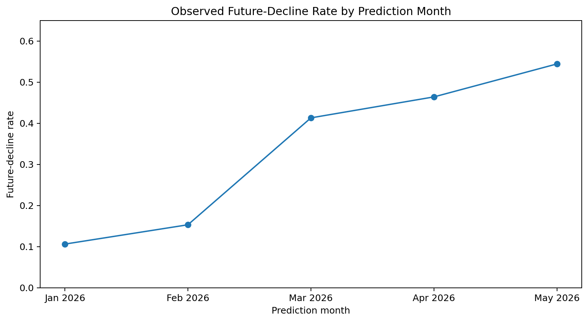
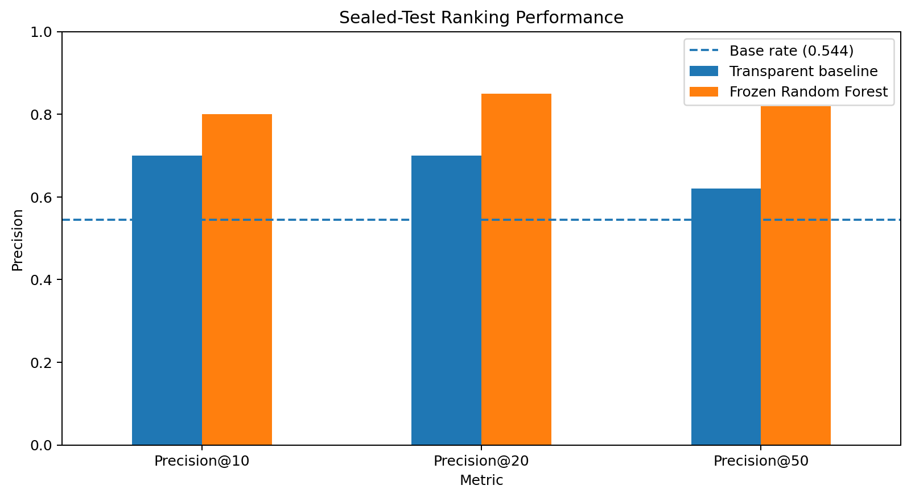
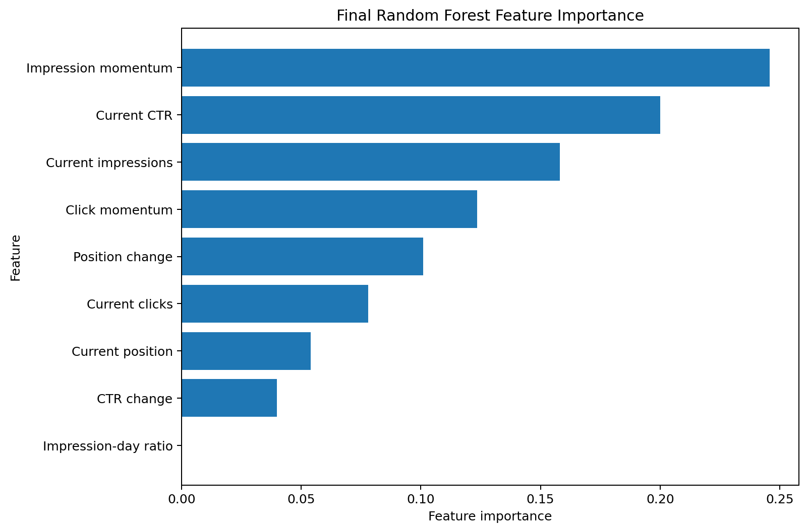

Can Historical Search Signals Predict Future Content Decline?
A time-aware ranking study for prioritizing which content pages an editor should review first.
Abstract
This study asks whether historical Google Search Console performance signals can identify and rank content pages that are at higher risk of a meaningful decline in search visibility during the following month. I used the FlyRank internship warehouse, aggregating daily search-performance records into monthly page-level observations and building leakage-safe features from the prediction month and the month immediately before it. I compared a transparent momentum-based baseline with Logistic Regression and Random Forest models using time-aware validation, then froze the selected model before opening a May→June 2026 sealed holdout. On the sealed holdout, the Random Forest achieved Precision@50 of 0.820, compared with 0.620 for the transparent baseline, while the test-set decline base rate was 0.544. The final output is a ranked human-review queue designed to help editors decide which pages to inspect first; it is decision-support, not an automatic refresh system or a causal model of Google Search.
1. Problem Framing
Editors cannot manually inspect every content page every month. The practical decision is not simply “will this page decline?” but:
Which pages should an editor review first when review capacity is limited?
The unit of analysis is one pseudonymized content page at one monthly prediction date. The system produces a ranked risk score and a priority-review queue. A false positive can waste reviewer time; a false negative can leave an important future decline unsurfaced.
Machine learning may help because decline risk can be associated with several signals at the same time: current visibility, clicks, CTR, ranking position, recent changes in impressions and clicks, and changes in position.
2. Data Safety
The project uses the FlyRank ML Internship warehouse release hosted on Hugging Face. The main source is fact_content_daily_performance, whose daily grain is report_date × client_hash_id × content_hash_id.
DuckDB queried and aggregated the remote Parquet data before pandas received the monthly page-level frame. Across December 2025 through June 2026, the monthly aggregation contained 1,202,786 page-month rows.
Time windows
| Role | Prediction month(s) | Outcome month |
|---|---|---|
| Historical context | December 2025 | — |
| Training | January 2026 | February 2026 |
| Training | February 2026 | March 2026 |
| Training | March 2026 | April 2026 |
| Validation | April 2026 | May 2026 |
| Sealed test | May 2026 | June 2026 |
Population and exclusions
Rows were included only when gsc_data_available IS TRUE. A modeling row required at least 20 GSC-available days in the previous, prediction, and outcome months, plus at least 100 impressions in the previous and prediction months. No minimum future-impressions threshold was applied.
Client names, domains, URLs, raw private queries, credentials, product flags, future-month values, trend_direction, and trend_pct were excluded from predictive inputs. Pseudonymous IDs were retained only for grouping, joining, ranking output, and audit.
3. Baseline
The transparent baseline was:
baseline_score = max(-impression_momentum_log, 0) × log_avg_daily_impressionsPages with more negative recent impression momentum receive higher concern, with more priority when current visibility is also higher. The baseline was evaluated on exactly the same rows, target, split, and ranking metrics as the learned model.
4. Model / Analysis
The final target was future_decline = 1 when average daily impressions in the following month were at least 30% lower than in the prediction month. The 30% threshold was chosen on development data before the June holdout was opened.
Features
The final model used nine historical features: log average daily impressions, log average daily clicks, current CTR, current average position, impression-day ratio, impression momentum, click momentum, position change, and CTR change.
Candidate models
I compared Logistic Regression with Random Forest. The random seed was 42. Random Forest was selected because it achieved the strongest validation Precision@50, the pre-specified operational metric.
Leakage controls
No future-month metric, label-derived field, product flag, client ID, or content ID was used as a predictive feature. The model specification, nine-feature list, 30% target, baseline formula, and hyperparameters were frozen before opening June.
5. Evaluation
The split was time-aware: January–March prediction months were used for training, April→May for validation, and May→June for the final sealed test.

Sealed May→June result
The frozen Random Forest was retrained on all 239,863 development rows and evaluated once on the sealed test of 78,137 eligible page-month rows across 39 pseudonymized clients. The test base rate was 54.4%.
| Method | Base rate | P@10 | P@20 | P@50 | Lift@50 | Avg. Precision | ROC-AUC |
|---|---|---|---|---|---|---|---|
| Transparent baseline | 0.544 | 0.700 | 0.700 | 0.620 | 1.139 | 0.574 | 0.524 |
| Frozen Random Forest | 0.544 | 0.800 | 0.850 | 0.820 | 1.507 | 0.644 | 0.617 |

The primary result is Precision@50 = 0.820: 41 of the model’s top 50 review candidates met the future-decline definition, compared with 31 of 50 for the transparent baseline.
Error analysis
The sealed top-50 queue contained 41 true declines and 9 false positives. The first three true declines immediately outside the queue were ranks 51, 52, and 53. This suggests that the rank-50 cutoff is an operational capacity limit, not a natural boundary between “decline” and “safe.”
6. Interpretation
| Feature | Importance |
|---|---|
| Impression momentum | 0.2458 |
| Current CTR | 0.1999 |
| Current impressions | 0.1580 |
| Click momentum | 0.1235 |
| Position change | 0.1009 |
| Current clicks | 0.0780 |
| Current position | 0.0539 |
| CTR change | 0.0399 |
| Impression-day ratio | 0.0000 |

The zero importance for impression_day_ratio is a useful negative result: it did not contribute materially to the final fitted Random Forest.
Limitations & honest framing
This project supports predictive ranking, not causal inference. A high model score does not mean that refreshing a page will improve search performance. The analysis does not identify or predict Google’s ranking algorithm.
The panel is unbalanced; monthly coverage changes across clients and pages. The modeling population also requires sufficient outcome-month coverage, so the evaluated population may not represent pages with very sparse or missing future measurement.
The decline base rate changed from 23.8% in training to 46.4% in validation and 54.4% in the sealed test. The 30% decline threshold is a practical proxy rather than a universal definition. The Random Forest score is used for ranking and should not be interpreted as a calibrated probability.
7. Ranked Recommendations
The final output is a priority-review queue, not an automatic refresh list. The first 50 pages receive review_page_before_refresh_decision; pages below the cutoff remain monitor.
| Rank | Pseudonymous content | Score | Reason code |
|---|---|---|---|
| 1 | content_12d95d7f8c2728ad | 0.783 | visibility_clicks_and_position_weakened |
| 2 | content_b63094bd417908e9 | 0.782 | visibility_momentum_down |
| 3 | content_6a49f91a2da31c46 | 0.778 | visibility_down_position_weaker |
| 4 | content_b9acd1ebff7d34ff | 0.775 | visibility_clicks_and_position_weakened |
| 5 | content_d2def933ed902af2 | 0.770 | visibility_down_position_weaker |
An editor should investigate search intent, CTR context, competing content, seasonality, recent content changes, and permitted query/ranking movement before deciding whether to refresh, rewrite, consolidate, monitor, or take no action.
8. Reproducibility
Repository: ML_Internship_FlyRankAI
Primary notebook: work/notebooks/capstone.ipynb
git clone https://github.com/MuhammadTalha-pk/ML_Internship_FlyRankAI.git
cd ML_Internship_FlyRankAI
pip install -r requirements.txtThe gated Hugging Face token must be stored securely as HF_TOKEN in Colab Secrets or an environment variable and must never be committed to the public repository.
Random seed: 42. The notebook creates validation, model-selection, and sealed-test JSON receipts so the final holdout claim is auditable from the repository.
9. Acknowledgments & Data Credit
Built on the FlyRank ML Internship dataset.
I also acknowledge the FlyRank Machine Learning Internship materials and warehouse documentation that guided the project’s public-safety, leakage-control, baseline, validation, and reproducibility practices.